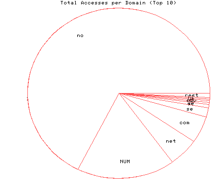
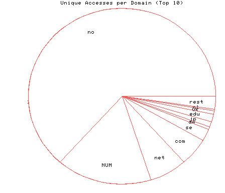

HTTP Server Domain Statistics
Covers: 10/16/95 to 03/11/96 (148 days).
All dates are in local time.
1 level, sorted by number of requests, 31 unique domains.
44087 : 1261 : 03/11/96 : Norway (.no) 11390 : 329 : 03/10/96 : (numerical domains) 3517 : 129 : 03/09/96 : Network (.net) 3311 : 101 : 03/10/96 : US Commercial (.com) 1153 : 45 : 03/06/96 : Sweden (.se) 397 : 9 : 03/07/96 : Germany (.de) 247 : 20 : 03/06/96 : Japan (.jp) 245 : 28 : 03/05/96 : US Educational (.edu) 210 : 12 : 03/08/96 : United Kingdom (.uk) 159 : 5 : 03/07/96 : Netherlands (.nl) 69 : 5 : 01/31/96 : Switzerland (.ch) 68 : 4 : 02/14/96 : Denmark (.dk) 61 : 8 : 02/22/96 : Canada (.ca) 34 : 2 : 02/20/96 : Finland (.fi) 32 : 1 : 01/31/96 : Turkey (.tr) 31 : 3 : 03/08/96 : Iceland (.is) 24 : 3 : 03/07/96 : Belgium (.be) 20 : 3 : 03/05/96 : France (.fr) 18 : 1 : 02/02/96 : Czech Republic (.cz) 17 : 1 : 11/27/95 : Israel (.il) 16 : 2 : 02/12/96 : Portugal (.pt) 16 : 1 : 01/25/96 : Non-Profit (.org) 14 : 1 : 11/24/95 : Singapore (.sg) 14 : 1 : 10/19/95 : Soviet Union (.su) 10 : 1 : 12/13/95 : Austria (.at) 8 : 1 : 01/03/96 : Italy (.it) 6 : 1 : 12/25/95 : Spain (.es) 1 : 1 : 03/07/96 : Chile (.cl) 1 : 1 : 01/31/96 : Poland (.pl) 1 : 1 : 01/25/96 : US Government (.gov) 1 : 1 : 11/04/95 : United States (.us)

Statistics generated at Mon Mar 11 03:02:58 MET 1996, (C) Schibsted Nett AS, 1995.